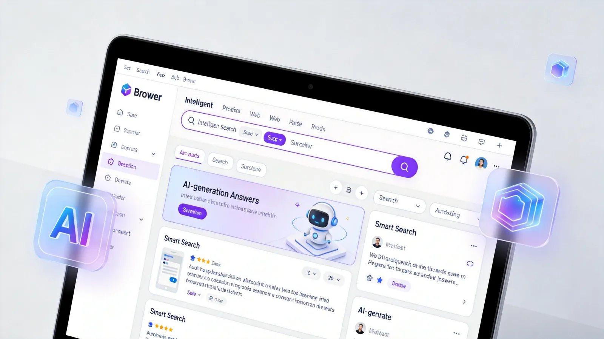
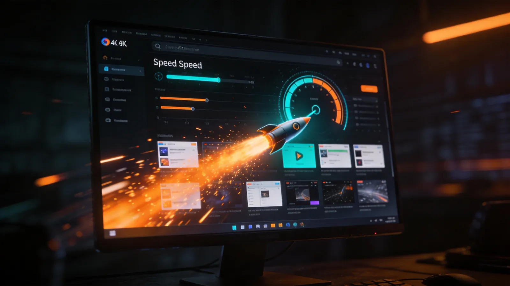
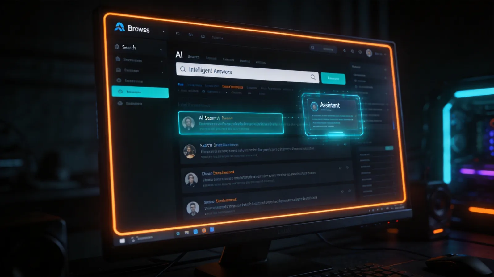

从AI搜索到网盘存储，从PDF编辑到影音播放，夸克浏览器为Windows电脑用户提供全链路效率解决方案。
融合阿里千问Qwen大模型，超级搜索框直接进行AI问答、创作、翻译、编程辅助。告别多窗口搜索，一站式获得精准答案，支持联网实时检索，信息获取效率提升300%。
Ctrl+Space随时唤起桌面AI助手，支持划词问答、截屏识图、全局翻译。写邮件、做PPT、生成思维导图、制作简历，AI帮你3分钟搞定，效率翻倍。
注册即享6TB超大存储空间，下载不限速，支持5倍速极速播放。在线预览文档、视频、音乐，多端实时同步，告别容量焦虑，你的私人云端数据中心。
内置OCR文字识别，支持PDF与Word/Excel/PPT互转，AI翻译、批注、签名、拆分合并一站式完成。告别付费PDF工具，浏览器内即可完成文档处理。
支持全格式视频播放，AI字幕实时翻译，HDR画质增强，5倍速流畅播放
智能识别并过滤弹窗广告、追踪器，还原纯净浏览体验，页面加载提速50%
AI边缘检测自动裁剪，OCR精准识别，生成高清扫描件，支持批量处理与导出
书签、密码、历史记录、网盘文件多端实时同步，Windows/macOS/手机无缝切换
了解夸克浏览器PC版的完整技术规格，确保与您的设备完美兼容。
| 软件名称 | 夸克浏览器 PC版 (Quark Browser) |
| 当前版本 | v6.9.1.868 |
| 安装包大小 | 约100MB（轻量安装） |
| 系统要求 | Windows 7及以上 / macOS 10.13 (High Sierra) 及以上 |
| 浏览器内核 | Chromium定制内核（兼容Chrome扩展生态） |
| AI引擎 | 阿里千问大模型 Qwen（支持联网搜索与多模态交互） |
| 网盘空间 | 最高6TB免费存储，下载不限速，支持5倍速播放 |
| 核心功能 | AI搜索 · 桌面AI助手 · 6TB网盘 · PDF编辑 · 超级播放器 · 广告拦截 · 无痕浏览 · 扫描王 · 跨端同步 · AI创作 |
| 价格 | 完全免费 |
| 开发商 | 广州市动悦信息技术有限公司 |
无论你是学生、职场人还是创作者，夸克浏览器都能成为你的效率利器。



关于夸克浏览器PC版的常见问题解答，帮你快速上手。
点击本页面的"立即下载"按钮，下载夸克浏览器安装包（约100MB），双击运行安装程序，按照提示完成安装即可。安装完成后桌面会出现夸克浏览器图标，双击即可使用。
夸克浏览器PC版支持Windows 7及以上版本（包括Windows 10/11），以及macOS 10.13（High Sierra）及以上版本。建议使用64位系统以获得最佳性能体验。
夸克浏览器集成了阿里千问大模型AI助手。您可以通过三种方式唤起：点击地址栏右侧的AI图标、使用快捷键Ctrl+Space随时唤起桌面AI助手、或选中文字后点击弹出的划词AI按钮。支持问答、写作、翻译、生图等多种功能。
是的，夸克浏览器注册即可获得最高6TB的免费网盘存储空间。存储不限速，支持5倍速高速下载，还支持在线播放视频、音乐等多种格式，是同类产品中的数倍容量。
夸克浏览器内置自动更新功能，启动时会检查是否有新版本。您也可以在设置中手动检查更新。当有新版本可用时，会弹出提示，点击即可一键升级，无需手动下载安装包。
夸克浏览器提供多重隐私保护：内置广告拦截引擎自动过滤追踪器和广告；无痕浏览模式下不保存任何浏览记录；本地数据加密存储；支持自定义Cookie管理和网站权限控制。所有AI功能均遵循严格的数据安全标准。
支持。登录同一夸克账号后，可实现书签、历史记录、密码、网盘文件等多端数据实时同步。支持Windows、macOS、Android、iOS全平台覆盖，随时随地切换设备无缝衔接使用。